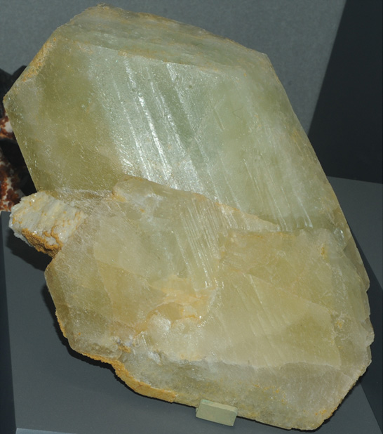

|

| LiAlPO4(OH,F)
This sample of montebrasite is displayed in the Smithsonian Museum of Natural History. Montebrasite is a phosphate mineral which contains lithium and fluorine with the composition LiAlPO4(OH,F). The sample at left is about 12x20 cm and is from Jenipapo district, Itinga, Minas Gerais, Brazil.
Montebrasite is the hydroxyl analog of amblygonite. It is known to produce enormous crystals.
|